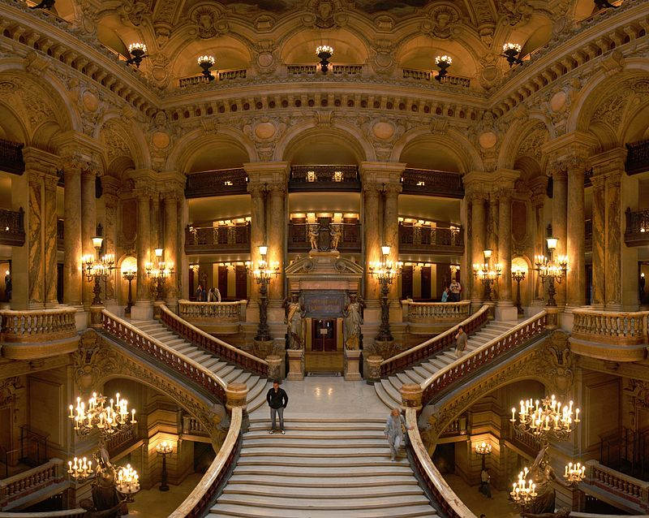

L'Opéra Garnier, inauguré en 1875, s'impose comme le manifeste absolu du style Napoléon III, où Charles Garnier a su fusionner les influences baroques et classiques dans un élan d'éclectisme flamboyant. Dès la façade, le spectateur est saisi par une polychromie de matériaux rares (marbres, porphyres et dorures) qui rompt avec la monotonie de la pierre de taille haussmanienne. Cette structure s'articule autour de l'ordonnance rigoureuse, rythmée par des groupes sculptés monumentaux, dont La Danse de Carpeaux, qui exprime une vitalité organique presque subversive pour l'époque. La colonnade du premier étage, inspirée de celle du Louvre, soutient un attique richement décoré de bustes de compositeurs, affirmant la destination lyrique du monument avant même d'en franchir le seuil.

A l'intérieur, le génie de Garnier se déploie dans la mise en scène du mouvement social, particulièrement dans le Grand Escalier. Ce n'est plus seulement un lieu de passage mais un véritable théâtre dans le théâtre, où les volumes de marbre de Carrare et les rampes d'onyx créent un écrin pour la déambulation de la haute société. La conception de la cage d'escalier, baignée par la lumière des candélabres, démontre une maîtrise exceptionnelle des volumes et de la perspective. La nef de marbre s'ouvre sur les foyers étincelants, dont le Grand Foyer, conçu pour rivaliser avec la galerie des Glaces de Versailles, multiplie les reflets pour amplifier l' illusion d'un espace infini, porté par les plafonds peins de Paul Baudry.


La salle de spectacle, dite "en fer à cheval", privilégie la visibilité et l'acoustique tout en exaltant le faste du Second Empire par l'usage dominant du rouge et de l'or. Le dôme, surmonté du lustre de cristal monumental, est aujourd'hui célèbre pour le plafond commandé à Marc Chagall en 1964, qui apporte une touche de modernité colorée à la rigueur académique. Chaque recoin de l'édifice, de la loge de l'Empereur aux couloirs feutrés, témoigne d'une horreur du vide qui sert une ambition politique : faire de l'Opéra le temple de la fête impériale et le symbole de prospérité de la nation française.